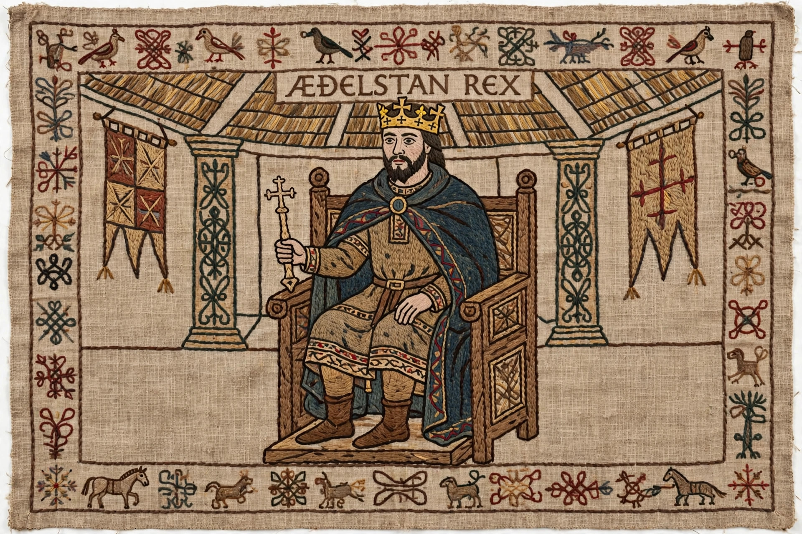

Harold Godwinson (c. 1022 – 14 October 1066), often called Harold II, was the last Anglo-Saxon king of England. The powerful Earl of Wessex and brother-in-law of Edward the Confessor, Harold was crowned on 6 January 1066, the day after Edward's death. His nine-month reign was consumed by two invasions: he destroyed a Norwegian army at Stamford Bridge in September, then marched south to face William of Normandy, who killed him at the Battle of Hastings.
| Harold Godwinson | |
|---|---|
 Harold enthroned, Bayeux Tapestry | |
| Reign | 5 January – 14 October 1066 |
| Coronation | 6 January 1066 |
| Predecessor | Edward the Confessor |
| Successor | William the Conqueror |
| Died | 14 October 1066, Battle of Hastings |
| Father | Godwin, Earl of Wessex |
Harold was the second son of Godwin, the most powerful earl in England. He became Earl of East Anglia in 1044 and of Wessex on his father's death in 1053, campaigning successfully against Gruffydd ap Llywelyn of Wales. In 1064 or 1065 he was shipwrecked on the Norman coast and, according to Norman sources, swore an oath to William supporting his claim to the English throne — an oath the English side later disputed. The Bayeux Tapestry depicts the episode prominently.
Edward the Confessor died childless on 5 January 1066; the Witan elected Harold, who claimed Edward had promised him the crown on his deathbed. Two rivals contested him: Harald Hardrada of Norway, backed by Harold's exiled brother Tostig, and William of Normandy. Hardrada invaded Yorkshire and won at Fulford, but Harold force-marched north and annihilated the Norwegians at Stamford Bridge on 25 September, where both Hardrada and Tostig fell.
Three days later William landed at Pevensey. Harold rushed his exhausted army south and took position on Senlac Hill near Hastings. On 14 October, after a day-long battle, Harold was killed — tradition, supported by the Tapestry, says by an arrow in the eye, though he may have been cut down by Norman knights. His death broke English resistance and opened the way to William's coronation and the Norman Conquest.
Bayeux Tapestry · Battle of Hastings · William the Conqueror · Edward the Confessor · Domesday Book